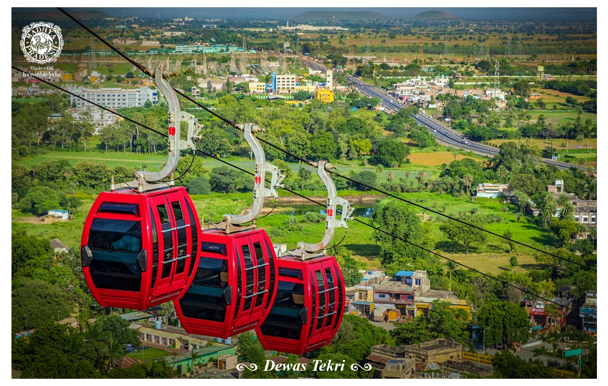

For Hindi Translation:-
English
देवास टेकरी का इतिहास



देवास में स्थित माता मंदिर को देवास माता मंदिर भी कहा जाता है। टेकरी पर स्थित यह मंदिर भवानी का यह मंदिर बेहद प्रसिद्ध है, यहां मंदिर में दो देवी विराजमान है जिनमें से एक
को तुलजा भवानी और दूसरी को चामुंडा देवी के नाम से जाना जाता है। तुलजा भवानी को छोटी मां और चामुंडा देवी को बड़ी मां भी कहा जाता है। यहां के स्थानीय लोगों का कहना है
कि बड़ी मां और छोटी मां बीच बहनों का रिश्ता था। एक बार दोनों के बीच किसी बात पर लड़ाई हो गई थी। विवाद के चलते दोनों बहने अपना स्थान छोड़ कर जाने लगी। बताया
जाता है कि बड़ी मां क्रोधित होकर पाताल में समाने लगी और छोटी टेकरी छोड़कर जाने लगी। दोनों माताओं को क्रोधित देखकर हनुमान जी और भेरूबाबा ने उनसे क्रोध शांत करने की
विनती की लेकिन तब तक बड़ी देवी का आधा शरीर पाताल में समा चुका था और वो ऐसी ही स्थित में टेकरी पर रुक गई।देवास माता मंदिर को 52 शक्तिपीठ में से एक माना जाता है।
बताया जाता है कि देश के अन्य शक्तिपीठों पर माता के शरीर के भाग गिरे थे लेकिन यहां टेकरी पर माता का रुधिर गिरा था, जिसके कारण मां चामुंडा देवी यहां पर प्रकट हुई थी।
चामुंडा देवी को सात प्रमुख देवियों में से एक माना जाता है। बता दें कि टेकरी पर स्थित तुलजा भवानी मंदिर की स्थापना मराठी राज परिवार द्वारा की गई थी और वे माता को अपनी
कुलदेवी के रूप में पूजते थे। दोनों माता सगी बहने हैं। ऐसा कहा जाता है कि विक्रमादित्य के भाई ने भर्तहरि ने तपस्या की थी। मंदिर के बारे में कहा जाता है कि यह मंदिर अनादि
काल से है। लेकिन मंदिर की प्राचीनता का कोई प्रमाण मौजूद नहीं है।